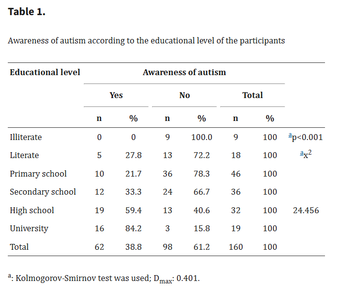
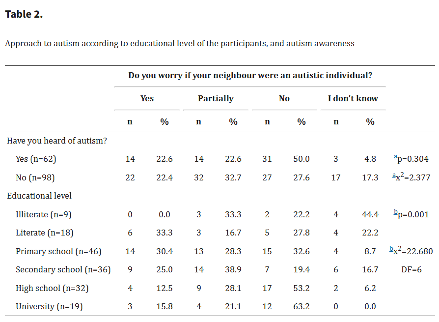

Source:https://www.comoxvalleyrecord.com/community/the-puzzle-of-autism-1586144
Source:https://www.comoxvalleyrecord.com/community/the-puzzle-of-autism-1586144
Page 1 - Understanding Autism in Society
In this page, I will explain how autism appears in society, how you can help them,how this disorder varies, and some common misconceptions about it.


Stats of the 2013 study using a table,
Source: //pmc.ncbi.nlm.nih.gov/articles/PMC5175045/
Page 2 - Why this Advocacy?
Page 2 will be more about the background problem and why I chose this advocacy. What is the background problem? Here it is:
The Background Problem
The main problem internationally,is that while some people
are aware of this disorder, they don't really know how to treat them/what it really is. In fact, a
study in Turkey (2013) showed that majority of people think it is some form of retardation. Not only that, discrimination is common
against people with neurodivergent conditions, including ASD. Based on the table above, most people interviewed also are unaware of this
disorder, meaning the root problem of this is a lack of education.
Locally, people with ASD are sometimes stigmatized. Not only that,
stereotypes about ASD have been cemented when films like Budoy and My Special Tatay were released.
More importantly, these films were released without accounting for the Autism Spectrum, and since it is
a spectrum, different people have tendencies to act differently.
Fortunately, there are things are being done about it:
What is currently being done about the problem?
Currently there are laws like RA 10524 that require at least 1% of all positions in government offices, agencies or corporations should be set aside for PWDs. Not only that, every 3rd week of January, there is something called Autism Awareness Week. Other measures, although indirect like the RA 10627 or anti bullying act were also implemented to help with this problem


Page 3 - About the Author/About Myself
Here, I will tell you about myself as an advocate, my contact information, and my life experiences relating to this advocacy.
How I come in as an advocate.
I come in as someone who spreads awareness and someone who tries to clarify misconceptions about ASD. As someone with ASD myself, I can personally answer questions about this advocacy if there are any. I also come in to promote acceptance of PWDs in general, not just in the context of ASD.
My Call To Action
Different doesn't mean less, we can learn, understand
and advocate.
Join me now in supporting
Autism Awareness.
Autism awareness education can begin within our own community here at PSHS–SMC.
By learning, understanding, and promoting inclusivity among students, we can build a strong foundation of awareness.
From there, we can extend this advocacy beyond our school—reaching families, organizations, and local communities—so that acceptance and support for individuals on the spectrum can grow.
This effort reflects our role as responsible students and future leaders who can create a more compassionate and inclusive society.